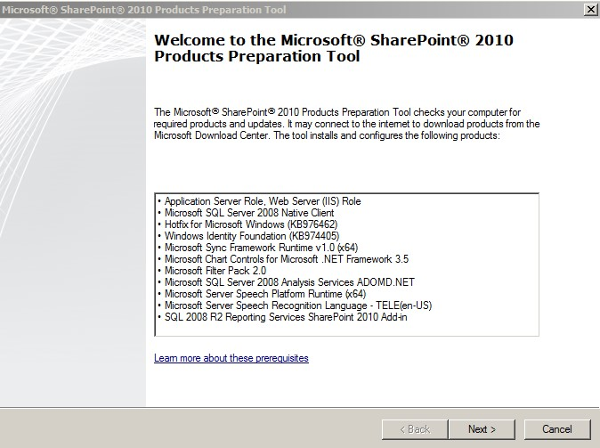

Sta je MS SharePoint Server 2010-Definicija
Microsoft SharePoint Server 2010 je platforma za saradnju koja je blisko itegrisana sa Microsoft Office I sa Active Directory. Korisnici sa odgovarajućim dozvolama mogu brzo da razviju i prave sajtove sa SharePoint Server-om 2010, bez obzira da li poseduju predhodno znanje iz programiranja ili ne. Ovi sajtovi se mogu koristiti za upravljanje alatima za saradnju, kao sto su biblioteke dokumenata, table za diskusiju, zajedničkih listi zadataka, zajedničkih kalendara, blogovi, istraživanja. SharePoint 2010 omogućava sigurnu saradnju omogućavajući korisnicima da prilagode dozvole o sadržaju tako da se može deliti i biti bezbedan u skladu sa željama korisnika. SharePoint 2010 omogućava praćenje, reviziju i kontrolu sadržaja koji se može postaviti u visoko strukturiran sajt sa informacijama politike koje određuju kako i kada da se promeni ili raspolaže tim na osnovu pravila životnog ciklusa sadržaja. Alternativno, sadržaj se može staviti u veliku nestrukturiranu oblast saradnje ili skladištenje sadržaja, gde će funkcije pretraživanja omogućiti korisnicima da pronađu dokumente. Microsoft SharePoint Server 2010 može skladištiti verzije svaki komad sadržaja na osnovu njene konfiguracije, omogućavajući verziju I praćenje i lako obnavljanje prethodnih verzija. To takođe može da pruži mogućnosti izveštavanja, kao i na osnovu pravila obaveštenja i upozorenja.
Instalacija MS SharePoint Server 2010
Pre nego što krenemo sa instalacijom SharePoint Server-a 2010, potrebno je nagovestiti da se instalacija sastoji iz dva dela. Na sledećoj slici je prikazan prozor pri početku instalacije SharePoint-a gde imamo dve instalacije.
Prva je Install software prerequisites, a druga je Install SharePoint Server. U poglavljima 3.1 i 3.2 bice objašnjen postupak instalacije MS SharePoint Servera. Na slici 1 se nalazi prikaz početka instalacije MS SharePoint Servera.
1. Install Software Prerequisites
Opcijom Install software prerequisites instaliramo sve ono što je zapravo potrebno SharePoint-u da bi radio. Prerequisites čini sve alatke koje nedostaju za instalaciju MS SharePoint server (SQL server, .NET Framework, WEB Server, itd.). Kad startujemo instalaciju on će ponuditi sve alatke koje su sadržane u instalaciji i kada kliknemo na install, krenuće redom da proverava da li je neka od aplikacija prethodno instalirana na serveru. Kada završi proveru i instaliranje trebamo dobiti prikaz kao na slici ispod.

Kada ispoštujemo sve naredne korake i kliknemo na Install, ako je sve u redu, trebamo dobiti prikaz koji je prikazan na sledećoj slici

2. Install SharePoint Server
Kada smo uspešno instalirali sve potrebne dodatke kako bi server uspešno radio i funkcionisao na pravi način, startujemo instalaciju samog MS SharePoint Servera. Na slici 4 nalazi se prvi korak pri instalaciji servera, a to je odabir vrste SharePoint-a. Postoje dve vrste instalacije servera za različite upotrebe. To su Standalone installation za kreiranje samo jednog servera i druga je Server Farm koja će instalirati sve komponente na jednu mašinu (Windows Server 2008). Mi ćemo za naš primer uzeti Server Farm, kao što možete videti na sledećoj slici.
Sledeći korak je odabir vrste instalacije Server Farm-a, gde biramo da li ćemo instalirati kompletnu instalaciju ili Stand-Alone. Odlučili smo se za Stand-alone instalaciju, pošto ona u sebi sadrži i instalaciju SQL Server 2008 Express Edition, koji će nama biti potreban u daljem delu izrade. Na sledećoj slici nalazi se prikaz odabira vrste instalacije MS SharePointa - a.
Na kraju, kada se sve uspešno zavržši, na sledećoj slici dobijamo prikaz završetka instalacije share point-a zajedno sa obaveštenjem o pokretanju konfigurisanja SharePoint-a.
Izgled automatskog konfigurisanja MS SharePoint-a kao i završetak konfiguracije, prikazani su na slici ispod.
Sledeći korak je instalacija uloge (role) ADDS-a (Active Directory Domain Services). Ovim korakom dodeljujemo našem racunaru (racunaru na virtuelnoj mašini) mogućnost dodeljivanja prava pristupa zajedničkim resursima na mreži, korišćenjem procesa autentifikacije, odnosno ako korisnici poseduju potreban username i password za pristup resursima na mreži.
Posle celokupnog procesa instalacije svih potrebnih delova softvera, na sledećoj slici konačno dobijamo prikaz centralne administracije nad MS SharePoint Serverom.
Tu se nalazi veliki broj komandi kojima možemo raditi gotovo sve što je vezano za sam MS SharePoint Server. Neke od funkcija su App Management koji nam omogućava podešavanje i kontrolu nad aplikacijama, sajtovima, bazama podataka, itd. Zatim imamo Monitoring pomoću koga možemo pratiti i videti sve informacije za sve servise i procese, kao i pokrenute poslove nad serverom. Zatim imamo sistemska podešavanja u kojima možemo vršiti podešavanje servera u farmi, itd. Zatim imamo i bezbednost koja je jako bitna za MS SharePoint, u okviru koje se podešavaju administratori grupe i nalozi.
Kreiranje i konfiguracija sajta
Što se tiče kreiranja grupe, sajta grupe i svih dodatnih funkcionalnosti, sve će to biti prikazano u poglavlju 4. Krenućemo iz početka sa kreiranjem sajta grupe preko templejta za kreiranje sajtova. Templejt definiše koje će funkcionalnosti biti dostupne na sajtu. Postoji više vrsta sajta. Neke od njih su Team Site, Blank Site, Blog, itd. Mi ćemo se opredeliti za Team Site. To je sajt grupe (tima) za brzo organizovanje i deljenje informacija. U sebi sadrži biblioteku dokumenata, liste za upravljanje objavama kalendar, zadatke i diskusije. Na sledećoj slici je prikazan izgled kreiranja sajta grupe
Sledeći korak je davanje imena sajta, kao i dodavanje novog logoa i opisa sajta. Sa sledecoj slici je prikazan postupak kreiranja primera sajta za naš projektni rad.
Izgled kreiranog sajta možete videti na slici ispod.
Sledeći korak je podešavanje grupa za pristup sajtu. Na sledećoj slici možemo izabrati ko može da pristupi našem sajtu. Možemo kreirati nove grupe ili izabrati neke od postojećih grupa. Postoje 3 grupe, to su Home Visitors - Oni imaju samo pravo čitanja sadržaja sa sajta. Druga grupa je Home Members - Oni mogu da pridodaju sadržaj na sajt, i treća grupa je Home Owners - To su vlasnici sajta koji imaju punu kontrolu nad sadržajem sajta.
U koliko želimo da promenimo prava pristupa nekim od korisnika grupa na MS SharePoint Serveru, to možemo uraditi izborom podešavanja klikom na Users and Permissions u podešavanjima sajta i tamo podesiti nova prava pristupa. Mi smo to uradili za naš nalog MSTEAM. Na slikama ispod prikazan je postupak dodavanja novih privilegija. U daljem delu rada, izvršićemo primer dodavanja novih obaveštenja, dokumenata, kalendara, diskusija, promene teme sajta, itd.
Ukoliko želimo da promenimo temu sajta, to možemo uraditi kao što je prikazano na sledećoj slici.
U narednim poglavljima uzeli smo neke od funkcionalnosti MS SharePoint Servera i prikazaćemo kako one u stvari funkcionišu.
1. Kreiranje diskusija
Diskusija u okviru foruma na MS SharePoint-u služi za otvaranje teme i diskusiju u okviru nje, može se kreirati veliki broj tema. Mi smo za naš primer kreirali 3 diskusije. Potrebno je ući na navigaciju sajta koju možete videti na slici sa leve strane i kreirati diskusiju (temu). Na sledećoj slici nalazi se prikaz kreiranih diskusija.
2. Kreiranje linkova
Linkovi služe za prikaz eksternog sadržaja na našem sajtu. kreiranje je veoma malo i jednostavno. Sve što je potrebno uraditi je ući na navigacioni meni sa leve strane sajta i ići na Linkovi. Na taj način se kreiraju svi linkovi za SharePoint. Izgled je prikazan na sledećoj slici.
3. Kreiranje navigacionog menija
Navigacioni meni služi za brzo snalaženje na sajtu (Quick Access). Možemo promeniti već postojeći ili kreirati novi navigacioni meni i postaviti mu linkove koje mi hoćemo. Izgled je prikazan na sledećoj slici.
4. Kreiranje biblioteke dokumenta
Biblioteka dokumenata na MS SharePoint Serveru služi kao skladišni prostor za dodavanje multimedije (teksta, slika, audio fajlova kao i video snimaka). Izgled biblioteke dokumenata prikazan je na slici ispod.
5. Kreiranje kalendara
Opcija za kreiranje kalendara može se naći sa leve strane navigacionog menija. Kalendar se kreira radi lakše organizacije sadržaja i članova na serveru. Izgled kreiranog kalendara sa praznicima prikazan je na sledećoj slici.
6. Novih stranica na sajtu
Stranice na sajtu pomažu u boljem snalaženju na sajtu zbog toga što stranicama možemo raščlaniti sadržaj na manje delove i lepše ih prikazati. Izgled postojećih stranica na sajtu kao i kreiranje nove stranice prikazan ja na sledećoj slici.
© AVIATO | 2017. | Sva prava zadržana.